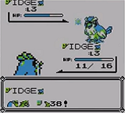

AttackDex/Y:238 (Nintendo 3DS Virtual Console)
(↑ Back to the AttackDex index.)
| Name (transcribed): TM38  Identifier (HEX): EE Identifier (DEC): 238 Applicable for Super Glitch?: No Effect byte: 0xE6 Effect pointer: ? Type : False Normal (0x10) Animation/Mirror Move: Seismic Toss (0x45) Power: 70 Accuracy: 0/256 PP (no PP Ups): 0
|
TM38 is a false Normal-type glitch move in the Nintendo 3DS Virtual Console release of Pokémon Yellow. It is not capable of causing Super Glitch.
A successful attack with this glitch move will result in damage with Seismic Toss's animation.
If this move does not knock out the opponent, it will result in a partial battle escape effect.
Partial battle escape effect
The move effect when used in a wild Pokémon battle will cause the player to warp to a (glitchy) version of Professor Oak's laboratory while partially still in battle. If used in a Trainer battle, or another D058 encounter (e.g. Pokémon from the Trainer-escape glitch) the player will still warp but the Trainer battle will restart (possibly due to D058 value being left as it was; triggering another battle as the player is out of battle).
In the out of battle state, the player is able to use a Master Ball to capture the foe and then throw the Master Ball again to capture one or more Ditto. In order for the player to escape from Professor Oak's lab (if pressing down doesn't work), they may change the quantity of item 37 (map type; D366) in an expanded items pack to 3 and then Dig away (or change it to 0 and Fly away; which is safer because you can Fly away without having to save and reset and possibly 'bricking' your save file due to being in a bad location).
(Special thanks to Glitcher Red for pointing out the 'save brick' information).
| |
Glitch Pokémon which learn TM38 (0xEE)
- g g (0xC8): Level 10
- 4 89 4 (0xE3): Level 10
See also